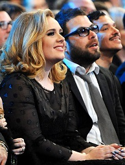

| ADELE | "Hello from the otherside .." |

|
Biography Adele Laurie Blue Adkins was born on 5 May 1988 in Tottenham, London, to an English mother, Penny Adkins, and a Welsh father, Marc Evans.Evans left when Adele was two, leaving her mother to raise her. She began singing at age four and asserts that she became obsessed with voices. Growing up, Adele spent most of her time singing rather than reading; the last book she read was Roald Dahl's Matilda when she was six years old. In 1997, at the age of nine, Adele and her mother, who by then had found work as a furniture maker and an adult-learning activities organiser, relocated to Brighton on the south coast of England. In 1999, two years later, she and her mother moved back to London; first to Brixton, and then to neighbouring district West Norwood, in south London. West Norwood is the subject of Adele's first record, "Hometown Glory", which she wrote and composed in 2004, when she was 16. Adele graduated from the BRIT School for Performing Arts & Technology in Croydon in May 2006,where she was a classmate of Leona Lewis and Jessie J. Adele credits the school with nurturing her talent even though, at the time, she was more interested in going into A & R and hoped to launch other people's careers. |
|
Personal Life and Other Ventures Adele had been dating charity entrepreneur and Old Etonian Simon Konecki since the summer of 2011. In June 2012, Adele announced that she and Konecki were expecting a baby. Their son was born on 19 October 2012.On the topic of becoming a parent, Adele has since observed that she "felt like [she] was truly living. I had a purpose, where before I didn't". Adele and Konecki brought a privacy case against a UK-based photo agency that published intrusive paparazzi images of their son taken during family outings in 2013.Lawyers working on their behalf accepted damages from the company in July 2014. In early 2017, tabloids started speculating that Adele and Konecki had secretly married when they were spotted wearing matching rings on their ring fingers. During her acceptance speech at the 59th Annual Grammy Awards for Album of the Year, Adele confirmed their marriage by calling Konecki her husband when thanking him. She subsequently clarified her marital status in March 2017, telling the audience at a concert in Brisbane, Australia, "I'm married now".In March 2017, Adele and Konecki purchased a home in East Grinstead, West Sussex. 
Born in Tottenham, north London, and raised in West Norwood, south London, Adele has a working-class London accent that Rolling Stone magazine says has only softened slightly over the years. Politically she is a supporter of the Labour Party, stating in 2011 that she was a "Labour girl through and through." In May 2011, she advocated a lower tax rate for high-income earners; a view counter to that of the Labour Party. In 2015, Adele stated "I'm a feminist, I believe that everyone should be treated the same, including race and sexuality". She is an icon for the LGBT community.On 12 June 2016 an emotional Adele dedicated her show in Antwerp, Belgium to the victims of the mass shooting at a gay nightclub in Orlando, Florida, earlier that day, adding "The LGBTQ community, they're like my soul mates since I was really young, so I'm very moved by it." SOURCE:https://www.0wikipedia.org/index.php?q=aHR0cHM6Ly90ci53aWtpcGVkaWEub3JnL3dpa2kvQWRlbGU |
"I have learned the main thing in life is that you get what you put in." - Adele
Categorizes
Awards List
GRAMMY AWARDS |
|
GOLDEN GLOBES AWARDS |
|
ACADEMY AWARDS |
|
Contacts